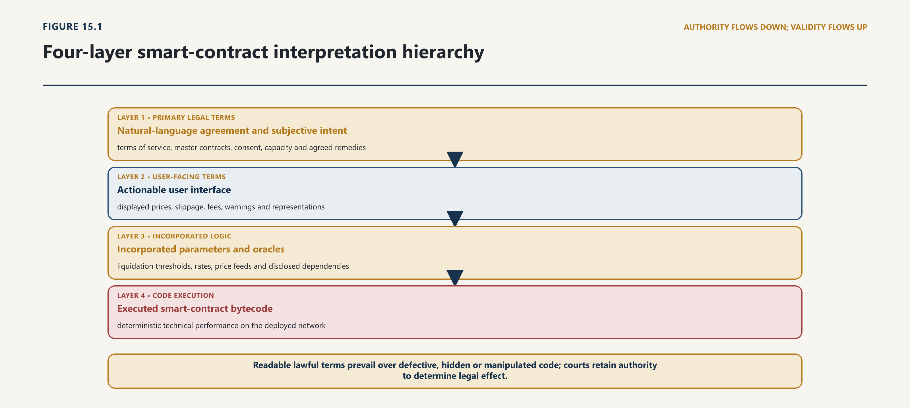
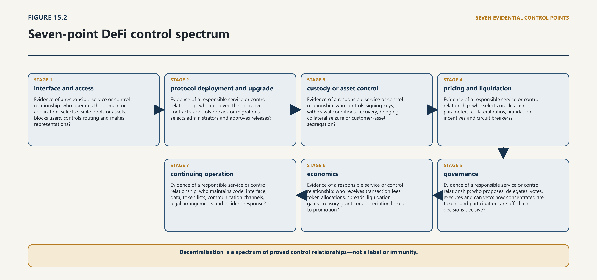

Chapter Fifteen · Part 4
SMART CONTRACTS, DEFI, DAOS AND AUTONOMOUS SYSTEMS
15.1 From Code Execution to Legal Consequence
15.1.1 Performance, settlement and state change
1
A smart contract is best treated as a functional description, not a legal conclusion. It may be code that performs part of an agreement, code that creates an asset or market without a bilateral agreement between all affected users, or code embedded in a wider service whose legally operative terms sit elsewhere. The same program can therefore occupy different legal positions. A transfer script may execute an existing obligation. An automated market maker may constitute infrastructure through which users transact under displayed terms. A governance module may implement a decision made under company articles or an LLP agreement. A malicious contract may be no contract at all between victim and attacker, even though it produces an on-chain state change.
2
Three layers must be separated.
3
The technical layer records what the system was capable of doing and what occurred: the code version, deployment address, input, state transition, signer, oracle response, governance action and resulting transfer. The transactional layer asks what persons communicated, authorised, represented or promised, and whether the execution was within that authority. The legal layer determines formation, validity, ownership, regulatory classification, breach, restitution, offence, jurisdiction and remedy. No layer can simply replace the others.
15.1.2 Why execution is not self-validating law
4
The Electronic Transactions Ordinance provides the domestic bridge. It defines an automated process by the absence of active human intervention and treats information generated or sent by an automated system programmed by or on behalf of an originator as attributable to that originator, subject to protections where the recipient knew or should have known that the message was not authentic. The Ordinance also amended the law of evidence so that an automated-system statement may be attributed to the person exercising power or control over the system. The legal addressee remains a person; the system is the means through which that person acts or produces evidence.1
5
That rule does not make every output valid or every operator liable. Attribution answers whose communication or record it is. Other law still decides whether there was authority, consent, mistake, illegality, breach, causation or a defence. The distinction matters when a protocol behaves exactly as coded but outside a party’s legal authority, when a compromised key signs a valid transaction, or when a governance vote causes code to perform an unlawful act. Technical validity establishes a fact about the system. It is not a conclusive judgment about legal validity.
15.2 Formation, Terms and Interpretation
15.2.1 Offer, acceptance, intention and incorporated code
6
The Contract Act supplies the starting conditions for an automated agreement. Parties must be competent, consent to the same thing in the same sense, give free consent, and pursue lawful consideration and object; an agreement expressly declared void does not become enforceable through code. Performance may be supplied by conduct, including conduct that activates a program, but the legal significance of that conduct depends on the terms and circumstances known to the parties.2
15.2.2 Natural language, code conflict and contextual interpretation

7
Four documents or data objects may compete to define an automated transaction:
natural-language terms displayed by a platform or interface;
source code or verified bytecode;
deployment and governance parameters, including addresses, thresholds and oracle sources; and
representations made through marketing, documentation, audits or direct communications.
12
The hierarchy should not be guessed after a loss. A professionally operated service should state which layer is authoritative for each issue. Natural-language terms may govern legal rights while code performs them. Specified parameter values may be incorporated by reference. A disclosed formula may define price. Some on-chain acts may be intended as conclusive instructions, while others remain subject to correction where execution departs from the agreement. An operator should not promise one result in readable terms and later rely on obscure code to produce another, especially against a consumer or non-technical counterparty.
13
Electronic form presents no general obstacle. The Electronic Transactions Ordinance prevents legal recognition from being denied solely because information or a signature is electronic and establishes rules for writing, original form, retention and electronic signatures. What it does not do is abolish proof. A party relying on a wallet action must still show the contractual meaning assigned to the action, the relevant terms available at that time, and the basis for connecting the credential to a person with capacity and authority.
14
Comparative material is useful here only as a design aid. The UNCITRAL Model Law on Automated Contracting 2024 proposes that legal effect should not be denied solely because an automated system formed or performed a contract, while preserving other rules about attribution and consequence. Its guide is explicit that the system is a tool, not a person with will or legal personality; attribution may turn on use, deployment, control and benefit.3 That model is not Pakistani law. It confirms, however, that recognition of automation and attribution to persons can coexist.
15
The most difficult cases involve machine-generated terms that no human saw before formation. A Singapore appellate decision concerning deterministic trading algorithms held, on its own law and facts, that an offer produced by one algorithm could be accepted by another. For the mistake inquiry, the court examined programmer knowledge from programming through formation rather than inventing a last human meeting immediately before the trade.4 Pakistan is not bound by that decision. Its practical lesson is narrower: a legal system can examine the actual method selected by the parties without pretending that software itself possessed knowledge. For adaptive systems, the inquiry will require more than a programmer’s original state of mind. It may include the deployer’s objectives, training and testing choices, monitoring information, later warnings, intervention rights and the decision to continue operation.
16
Interpretation should therefore begin with the whole transaction architecture. Courts and regulators should obtain the operative version of the code and terms, configuration history, user flow, signing process, oracle specification, upgrade mechanism and records of material representations. Expert evidence may explain technical operation; it should not decide the legal meaning of the parties’ relationship.
15.3 Error, Exploit, Oracle and Upgrade Risk
15.3.1 Mistake, vulnerability and governance intervention
17
The phrase “the code worked as designed” can describe both successful performance and catastrophic failure. A program may contain a coding defect, implement a mistaken business rule, receive corrupt data, interact unexpectedly with another contract, or expose an economically exploitable condition. These are different events with different legal consequences.
18
A useful incident classification is:
| Event | Technical question | Legal question |
|---|---|---|
| implementation defect | did code diverge from the approved specification? | who undertook to design, review, deploy or maintain it, and what duty applied? |
| specification error | did code accurately implement a mistaken rule or parameter? | whose instruction or governance decision supplied the rule, and can mistake, breach or restitution respond? |
| key or authority compromise | did a valid credential invoke an unauthorised action? | who had legal authority; who bore credential-security duties; what notice or reversal terms applied? |
| oracle failure or manipulation | was an external fact false, stale, delayed or manipulable? | who selected and monitored the source; what fallback and dispute rule governed reliance? |
| economic exploit | did a user deliberately use permitted calls to produce an extreme result? | was the conduct within the transaction bargain, misleading, manipulative, dishonest or otherwise unlawful? |
| governance or upgrade failure | did a vote, administrator or migration alter operation? | was the decision valid under the governing arrangement, properly disclosed and within regulatory limits? |
19
The Contract Act distinguishes common mistake about an essential fact from unilateral mistake and separately regulates free consent, fraud and misrepresentation. It also addresses performance, refusal, impossibility, alteration and compensation. Those provisions should not be compressed into a universal “bug means void” rule. A defect may produce no contract, a void or voidable agreement, breach of a valid agreement, restitution without contract, or no private-law relief where the parties allocated the risk and no mandatory law intervenes.5
20
An oracle should be analysed as a governed information service. The relevant facts include who selected it, whether sources are independent, how prices are calculated, how stale or divergent data are handled, who can change the feed, and whether a fallback exists. Calling data “on-chain” does not make the underlying observation true. If a liquidation engine depends on an oracle, the responsible service should disclose that dependency and maintain controls proportionate to the loss that a bad observation can cause.
21
Upgradeability likewise reveals rather than removes control. Proxy administrators, multisignature signers, security councils, emergency committees, front-end operators and governance delegates may possess different intervention powers. A protocol described as immutable may still depend on a mutable interface, oracle, token list or privileged asset issuer. Conversely, a system with no administrator may be genuinely difficult to stop; that fact increases the importance of pre-deployment testing, bounded exposure and truthful disclosure. The investigation should map every material control path and record when it was used, renounced or transferred.6
15.3.2 Foreseeability, allocation and disclosure
22
Loss allocation should follow a recognised rule, not an impression that the actor nearest to the code must pay. Relevant considerations include contractual undertaking, statutory duty, agency, misrepresentation, negligence where recognised, unjust enrichment, wrongful interference, participation in market abuse, and causation. Within those doctrines, capacity to prevent or reduce harm matters because it identifies who could test, disclose, monitor, pause, insure or diversify the risk. Benefit matters because a person who continuously earns fees from operating a service cannot rely on decentralisation rhetoric while withholding the controls and records needed to make the service safe. Neither factor is a free-standing substitute for law.
15.4 Remedies and Reversibility
15.4.1 Injunction, restitution, damages and tracing
23
On-chain finality describes how a network treats a recorded transition. It does not erase legal remedies. A court may declare rights, award compensation, order a person to transfer substitute assets, restrain use of a key, direct a custodian or regulated intermediary, preserve evidence, freeze property within legal power, or address unjust retention of a benefit. PVARA’s statute provides administrative and protective powers that include directions, sanctions, freezing and blocking measures subject to the Act. Contract remedies include compensation for loss that naturally arose or was within the parties’ contemplation, and recovery of money or property delivered by mistake or coercion.7
15.4.2 Technical irreversibility versus legal remedy
24
Remedy design nevertheless must respect technical reality. An order to “reverse the blockchain” may be impossible, overbroad or directed to the wrong person. The claimant should identify the asset, present controller, custody path, relevant service and feasible act. A court may need expert assistance to distinguish a change to protocol history from a transfer of an equivalent asset, a block on an interface, an instruction to a custodian or an injunction against a known controller.
25
A responsible automated service should establish an incident pathway before launch. That pathway may include:
a defined trigger for pausing new exposure without silently rewriting accrued rights;
authenticated emergency decision-makers with separation of duties;
preservation of code, state, logs, governance messages and oracle data;
notice to affected users and regulators on an appropriate timetable;
independent reconstruction of what occurred;
a claims and dispute process; and
a lawful method for compensation, restart, migration or wind-down.
33
Emergency power is itself a risk. It may be compromised, captured or exercised to favour insiders. The terms should define scope, duration, review, logging and conflicts. High-impact action should require a threshold higher than ordinary maintenance, except where immediate containment is necessary and prompt ratification follows. A person marketing a service as incapable of intervention should not secretly retain an administrator key; a person genuinely unable to intervene should not imply that customer losses can be reversed.
34
Reversibility is therefore a spectrum. Technical rollback, compensating transfer, legal restitution, insurance payment and prospective correction are different mechanisms. Sound design specifies which are possible rather than promising “finality” when convenient and discretion when insiders need it.
15.5 DeFi Functions, Dependencies and Actual Control
15.5.1 Trading, lending, leverage and liquidation
35
“Decentralised finance” is not a statutory exemption. It describes arrangements that use distributed-ledger infrastructure to perform or coordinate financial functions. Those functions commonly include exchange, brokerage, lending, borrowing, collateral management, derivatives, asset management, issuance, custody-like control and transfer or settlement. The Financial Stability Board observes that DeFi largely replicates services found in traditional finance and that the degree of decentralisation varies substantially across arrangements.8
15.5.2 Front ends, administrators, validators and governance

36
Pakistan’s Virtual Assets Act already provides the principal domestic method. Section 9 directs classification by substance, function, use and economic effect regardless of name, structure or designation. Schedule I lists virtual-asset services, while section 18 requires a licence to carry on the business of providing those services to third parties. The Act separately defines an issuer by primary control over initial supply, reserves or on-chain governance and excludes technical development or maintenance alone where that control is absent. It defines a controller through ownership, voting power or significant influence or control. Traditional securities, derivatives and collective investment schemes within SBP or SECP jurisdiction remain outside the Act’s virtual-asset scope, preserving the need for perimeter coordination.9
37
The correct DeFi inquiry proceeds function by function:
| Function | Evidence of a responsible service or control relationship |
|---|---|
| interface and access | who operates the domain or application, selects visible pools or assets, blocks users, controls routing and makes representations? |
| protocol deployment and upgrade | who deployed the operative contracts, controls proxies or migrations, selects administrators and approves releases? |
| custody or asset control | who controls signing keys, withdrawal conditions, recovery, bridging, collateral seizure or customer-asset segregation? |
| pricing and liquidation | who selects oracles, risk parameters, collateral ratios, liquidation incentives and circuit breakers? |
| governance | who proposes, delegates, votes, executes and can veto; how concentrated are tokens and participation; are off-chain decisions decisive? |
| economics | who receives transaction fees, token allocations, spreads, liquidation gains, treasury grants or appreciation linked to promotion? |
| continuing operation | who maintains code, interface, data, token lists, communication channels, legal arrangements and incident response? |
38
No single fact controls. Publishing open-source code does not alone make the publisher the operator of every later deployment. Owning a governance token does not alone make a passive holder a service provider. Running an independent validator does not alone establish control over an application. Equally, dispersing tasks among a foundation, development company, multisignature group and token vote does not prove absence of coordinated control.
39
IOSCO’s comparative DeFi work adopts a similar factual approach. It identifies possible responsible persons among founders and developers, governance participants, holders of administrative keys, interface promoters, maintainers, persons with material non-public information, controllers of customer assets or reversals, and fee recipients. It also warns that code is not self-implementing and that control may be exercised through governance or influence rather than a conventional corporate title.10 These are investigative leads, not automatic Pakistani liability categories. Each role must be connected to the relevant domestic provision.
40
FATF likewise treats the marketing label as non-determinative when asking whether owners or operators provide or actively facilitate virtual-asset services. Its guidance concerns anti-money-laundering standards, not the whole field of private or public liability.11 For Pakistan, the operative statutory question remains whether a person carries on a listed service business, acts as an issuer or controller, or falls within another applicable law.
41
The implementation position must be stated by reference to the Pakistan Virtual Asset Services Regulations 2026 (SRO 1419(I)/2026), the Pakistan Virtual Asset Services Activity Specific Regulations 2026 (SRO 1420(I)/2026), and current licensing processes. The earlier NOC and consultation stages remain relevant to transition, but they no longer justify describing the 2026 Regulations as draft. A DeFi project must obtain the permission required by the Act and the notified framework and cannot treat silence, technical decentralisation or an earlier consultation-stage gap as permission to launch a regulated service.
15.6 DAO Constitution and Participant Responsibility
15.6.1 Membership, voting and treasury
42
A decentralised autonomous organisation is not one legal form. It may be a discussion group, an on-chain voting process, an unincorporated profit-seeking association, a company or LLP using token voting, a foundation with an advisory community, or a network of contracts and actors without a single organisation. The name does not answer whether property can be held, who may contract, how decisions bind participants or which liabilities are separated.
43
Pakistani organisational law begins with formation and relationship. Registration under the Companies Act creates a body corporate with perpetual succession. Incorporation under the Limited Liability Partnership Act creates a separate legal person; partners act as agents of the LLP subject to the agreement, the LLP ordinarily bears its own obligations, and personal responsibility remains for a person’s wrongful act or fraud. A “wrapped” DAO can therefore obtain personality and an internal governance constitution by using an available legal form, but the wrapper must actually hold rights, make contracts and connect on-chain decisions to its lawful organs.12
44
Without a wrapper, partnership law may become relevant. A partnership is the relation between persons who agree to share profits of a business carried on by all or any acting for all. The real relation shown by all relevant facts controls; receipt of a profit share or contingent payment alone is not sufficient. A partner is an agent of the firm for its business, and partners may be jointly and severally liable for acts of the firm while they are partners.13
45
This means neither extreme is correct. A token airdrop or passive vote does not automatically create partnership. But founders, active governors or profit-sharing operators cannot assume that absence of registration prevents a court from finding a partnership where agreement, business, shared profit and mutual agency are proved. Relevant evidence includes the launch agreement, token and treasury allocations, proposal rights, quorum and delegation, off-chain coordination, representations to counterparties, fee distribution, power to bind resources, and conduct showing that one participant acted for others.
15.6.2 Entity character, fiduciary questions and liability
46
Comparative work by the UK Law Commission reinforces the factual nature of the inquiry. It does not treat every DAO as a partnership, recognises that decentralisation may be technical, political and economic, and warns that partial wrapping may leave some activity or participants outside the legal entity.14 That work is not Pakistani doctrine, but it usefully exposes the organisational questions a Pakistani court or regulator would have to prove.
47
Where a DAO uses a company, token voting is not automatically a statutory company vote. Company voting rights attach to membership and shares or other securities carrying voting rights, while articles, notice, quorum, board authority and statutory duties continue to govern. A token poll may advise the board, trigger an action authorised by the articles, or constitute a valid member vote if the legal architecture has properly made it one. It cannot silently displace the Companies Act. Ultimate beneficial ownership duties also look to natural persons who own or control through shares, voting rights or effective control, which may require analysis beyond the visible token address.15
48
Directors cannot outsource their statutory judgment to a token count. They must act under the articles, in good faith, with care, skill, diligence and independent judgment, and address conflicts and undue gain. A board may use transparent community input, but it must determine what legal effect the vote has and whether implementation is lawful.16
49
Every operational DAO should publish a responsibility map: legal entity if any; governing instrument; authorised representative; treasury owner and signers; proposal, voting and execution rules; administrator and emergency powers; conflicts; fee and token economics; dispute forum; and winding-up method. The map should be truthful about what is on-chain and what is decided through foundations, companies, delegates, developers or service providers.
15.7 Algorithmic Tokens and Market Conduct
15.7.1 Automated issuance, pricing and liquidation
50
Algorithmic design does not displace market-conduct law. The Virtual Assets Act prohibits issuance or distribution of an algorithmic token unless specifically permitted by regulations and subject to safeguards. That provision should not be read as an existing general permission. It creates a prohibition and a delegated route by which permission and safeguards may later be established.17
51
“Algorithmic token” risk is broader than source-code quality. A stabilisation mechanism may depend on collateral, redemption capacity, market depth, related tokens, discretionary intervention, oracle data, incentive-sensitive arbitrage and confidence. Disclosure should identify the legal issuer or responsible person, reserve ownership and custody, redemption right, governance, intervention powers, stress assumptions, conflicts and failure sequence. A claim that an algorithm “maintains” value should not be made without evidence about the conditions under which it can fail.
15.7.2 Manipulation, disclosure and systemic feedback
52
Automated strategies also remain subject to market-abuse rules. Section 52 of the Virtual Assets Act addresses manipulation and misuse of inside information in virtual-asset markets. Where a product is a security, derivative or futures-market instrument within another statutory perimeter, the Securities Act 2015 or Futures Market Act 2016 contains prohibitions relating to insider dealing, false trading, manipulation, fraudulent inducement and deceptive devices.18 The legal classification must be established; the chapter does not collapse all tokens into securities.
53
Market surveillance should be capable of detecting conduct executed across contracts and addresses: wash trading, spoofing-like order behaviour, oracle manipulation, coordinated liquidations, governance trading around undisclosed proposals, and extraction using privileged knowledge of an upgrade or listing. Automation changes speed and evidence, not the need to prove the elements of the relevant prohibition. Investigators should preserve code versions, transaction traces, private communication, governance records, beneficial control evidence and the economic destination of proceeds. A public address alone does not prove the person behind it.
15.8 Autonomous and AI-Mediated Agents
15.8.1 Authority, attribution and delegated decision-making
54
The term “AI agent” covers very different systems. One may recommend a transaction for human approval. Another may operate within fixed limits using a delegated wallet. Another may negotiate terms, choose counterparties and adapt strategy from data. Legal analysis should describe the granted capability rather than infer personality from fluent behaviour.
55
Under Pakistan’s current framework, the safer default is that an AI system is a tool through which a natural or legal person acts. The Electronic Transactions Ordinance attributes automated communications to the originator where the system was programmed by or on the originator’s behalf, and its evidence amendments look to the person with power or control. Neither provision grants the system separate legal personality.19 The relevant persons may include the principal deploying the agent, an authorised human or corporate agent, the service provider, and a counterparty; their duties differ.
56
Agency doctrine should not be anthropomorphised. The Contract Act defines an agent as a person employed to do an act for another or represent another in dealings with third persons. Authority may be express or implied; an agent’s authorised contract can bind the principal; unauthorised acts may raise severability, ratification or responsibility questions. Software itself need not be declared an agent for these rules to work. A principal may authorise a human or legal-person service provider to deploy software, or may directly use an automated system as the medium for its own offer, acceptance or performance.20
57
An AI-agent deployment should establish at least:
the identity and legal capacity of the principal;
the service provider and any human or legal agent;
the transactions, assets, counterparties and jurisdictions within scope;
spending, leverage, frequency and loss limits;
the source and status of data used;
prohibited objectives and conflict rules;
authentication, key custody and revocation;
monitoring, escalation, pause and incident responsibility;
records sufficient to reconstruct material outputs; and
what the counterparty is told about automation and authority.
15.8.2 Liability, evidence and human responsibility
68
The principal should ordinarily bear the consequences of an output within the authority deliberately granted, subject to applicable law and rights against a provider. That encourages meaningful limits rather than allowing a deployer to take gains while disowning losses as “the AI’s decision”. An output outside authority requires closer analysis: did the counterparty know the limit; did the principal create apparent authority; did a provider breach an undertaking; was the system compromised; and can the act be ratified or restitution ordered? The answer cannot be supplied by the model’s own explanation.
69
Adaptive systems complicate intention and foreseeability, but do not make them impossible. The investigation should examine objectives, training and test evidence, known failure modes, data changes, monitoring alerts, human interventions and the decision to deploy or continue. A person need not foresee the exact output to foresee the class of risk created by granting a system open-ended access to assets.
70
Pakistan’s National AI Policy 2025 is policy, not a substitute for enacted contract or financial law. It nevertheless supports lifecycle evaluation, transparency, risk-sensitive governance and human oversight for high-risk systems.21 The official Islamabad AI Declaration of February 2026 similarly articulates human oversight, explainability and auditability for systems with public consequences.22 Those materials justify design direction, not invented liability. In virtual-asset regulation, PVARA should translate relevant principles into specific licence conditions and records tied to the regulated function.
15.9 Conflict of Laws and Cross-Border Operation
15.9.1 Distributed systems and governing law
71
Distributed infrastructure can separate users, developers, validators, interfaces, issuers, assets and governance across jurisdictions. That does not make jurisdiction disappear. It makes the connecting facts more important.
72
Section 4 of the Virtual Assets Act gives the Act extraterritorial application in the circumstances it specifies, including defined activity directed to or affecting Pakistan and cross-border cooperation. The Electronic Transactions Ordinance also contains an extraterritorial provision. Those statutory rules do not resolve every private-law question about governing law, forum, property, insolvency or enforcement.23
15.9.2 Forum, enforcement and asset location
73
An automated service should state governing law and dispute forum, but those clauses cannot necessarily displace mandatory regulation, consumer protection, criminal law or the rights of third parties. Courts may need to identify several distinct locations or connections: the parties and targeted market; incorporation and operational decision-making; place from which a communication is sent or received under electronic-transactions law; custody and key control; interface and promotion; performance; and location of persons against whom effective relief is sought.
74
“The blockchain has no location” is therefore not a complete conflicts analysis. Nor should a court pretend that one server or node determines every issue. The connecting factor must match the question. Contract formation, regulatory licensing, proprietary remedy, insolvency treatment and enforcement against a custodian may each require a different analysis.
75
Cross-border design should preserve evidence and a reachable legal representative. A service targeting Pakistani users should not make rights depend on an anonymous forum, an unidentifiable governing group or records that no responsible person can produce. Where PVARA licensing applies, local incorporation, office and operational decision authority under the Act provide important accountability anchors. International cooperation remains necessary where assets, evidence or responsible persons are abroad.
15.10 Regulatory Design for Pakistan
15.10.1 Function-based duties and control tests
76
Pakistan does not presently need a universal legal personality for software, a single statute for every DAO, or a rule that all smart-contract execution is final. It needs precise clarification at the interfaces where existing law can otherwise be obscured by architecture.
77
PVARA can build much of the immediate framework under ss 5, 9, 18–22, 35, 41–45 and 68 of the Virtual Assets Act 2026. Coordination with SECP, SBP, competition, consumer, cyber, data and criminal-justice institutions is essential where another perimeter controls.
15.10.2 Sandboxing, auditability and bounded experimentation
78
The following package should be developed through final regulations, licence conditions, guidance and tested sandbox requirements, with primary legislation reserved for issues that delegated authority cannot validly settle.
79
Functional perimeter statement. Guidance should map Schedule I services to common DeFi arrangements and identify the evidence used to find a service provider, issuer or controller. It should state that development alone is not enough where the Act excludes technical maintenance without control, and that control, promotion, service provision and economic benefit remain fact-dependent.
80
Automated-contracting disclosure. A regulated service should tell users when a material act is automated; identify the contracting or responsible legal person; state the hierarchy between readable terms, code and parameters; disclose material oracles, administrators and upgrade powers; and provide accessible transaction and complaint records.
81
Smart-contract governance. High-impact contracts should receive independent review before deployment and material upgrades, with threat modelling, testing, version control, dependency and oracle assessment, privileged-access review, deployment verification and continuing monitoring. Immutability claims must be verified. Audits should not be marketed as guarantees.
82
Intervention and incident rules. Licensees should document pause, disable, upgrade, migration and compensation capacities, including who can act and how the action is reviewed. Where intervention is impossible, exposure limits and warnings should reflect that fact. Material incidents require preservation, notice, reconstruction and a claims pathway.
83
DAO accountability. A regulated DAO-facing service or issuer should identify its legal entity or explain the absence of one, authorised representative, governance instrument, treasury controllers, material delegates, administrators, beneficial control, fee recipients and dispute route. PVARA should not declare all token holders responsible; it should demand the facts needed to apply existing law.
84
AI-agent controls. A licensee permitting autonomous transaction agents should impose scopes, limits, credential controls, monitoring, revocation and records. High-impact activity should have effective human or legally accountable organisational oversight. The responsible licensee must be able to explain the authority and risk controls even where a model’s internal reasoning is not fully interpretable.
85
Market-integrity engineering. Algorithmic trading, liquidation, oracle and governance activity should feed surveillance proportionate to the service. Persons with privileged code, listing, oracle, treasury or upgrade information should be governed by conflict, confidentiality and dealing controls.
86
Remedy and continuity planning. Terms should distinguish technical finality from legal remedies and explain available complaint, compensation and dispute mechanisms. Licensees should maintain resources and procedures for operational failure, migration and orderly wind-down.
87
The notified Pakistan Virtual Asset Services Regulations 2026 now draw a precise line between binding duties and supervisory guidance. Regulations 58 and 62–64 require licensees to maintain technology governance and change controls, independently review and test material smart contracts before deployment or material upgrade, detect and respond to automated market abuse, and govern material algorithms through documented objectives, validation, version control, monitoring and prompt suspend-or-disable capability. Regulations 73–79 expressly operate as supervisory guidance and do not create independent obligations beyond the binding provisions. The additional safeguards proposed above remain recommended engineering or future regulatory practice unless imposed by the Act, regulations or a lawful licence-specific instrument.24
88
Two legislative questions may eventually require Parliament. First, a targeted automated-contracting amendment could clarify attribution and unexpected outputs for adaptive systems while preserving contract, consumer, agency, evidence and liability rules. Secondly, if economically significant unincorporated DAOs repeatedly create uncertainty about representation, service and property holding, legislation could provide an elective registration or representative mechanism. Neither reform should confer immunity or force every informal technical community into one organisational form.
89
The discipline is to regulate responsibility without fabricating centralisation. A system can be materially decentralised and still have identifiable service providers. It can lack a unilateral controller yet expose users to a function that warrants entry conditions. In that case, regulation may require a locally accountable interface, restrict the activity, impose exposure limits or decline authorisation if no one can meet essential duties. “No one can comply” is sometimes evidence of a design that should not carry other people’s assets at scale.
Handoff to Rules as Code
90
This chapter has used code as an object of legal analysis. Chapter 26 considers the distinct project of translating selected legal requirements into machine-readable and partly executable rules. The distinction is critical. A smart contract executes programmed conditions within a system. Rules as Code attempts to express public or private legal rules in a form that software can consume. Neither makes interpretation, lawful authority or institutional review unnecessary.
91
The present analysis supplies a set of requirements that can later be formalised:
| Legal requirement | Candidate machine-readable element | Matter that must remain reviewable |
|---|---|---|
| responsible person | verified entity identifier, licence and role | whether facts establish control, agency or service provision |
| authority | signed mandate, scope, asset and transaction limits | capacity, apparent authority, ratification and fairness |
| operative terms | versioned text, code hash, parameter and hierarchy record | interpretation, incorporation, misleading terms and mandatory law |
| governance | proposal, vote, delegation, execution and administrator records | validity of decision, conflicts, duties and participant relationship |
| oracle reliance | source, timestamp, freshness, confidence and fallback | truth, reasonableness, manipulation and causation |
| intervention | pause, upgrade, migration and approval policy | proportionality, good faith, competing rights and emergency justification |
| audit and incident evidence | logs, provenance, code version and custody record | authenticity, attribution, privilege, admissibility and weight |
92
Chapter 26 should not encode the slogans rejected here. “Code is law”, “token vote equals consent”, “autonomous means ownerless” and “immutable means irreversible” are not rules suitable for machine execution. The machine-readable layer must preserve source authority, legal status, exceptions, effective dates, jurisdiction, responsible institution and a route for human contestation.25
93
The broader conclusion is that smart legal systems become trustworthy only when their legal and technical architectures tell the same truth. If a company controls an upgrade, the governance map should show it. If no one can stop a protocol, customer exposure and regulatory treatment should reflect that. If an AI agent acts within delegated limits, the principal should be identifiable. If readable terms and code conflict, the hierarchy should be known before execution. If an incident occurs, evidence and remedies should survive technical finality.
94
Pakistan’s law need not imitate software’s metaphors. It can recognise automated performance while continuing to ask the oldest and most useful legal questions: who acted, with what authority, toward whom, for whose benefit, under which duty, and who must answer for the loss?
Chapter 15 Conclusion
95
Programmable execution changes the mechanics of performance, not the need for legal characterisation. Formation, interpretation, mistake, exploit, upgrade and remedy remain legal questions even when a protocol executes without contemporaneous human intervention. Claims of decentralisation must likewise be tested against repositories, interfaces, governance power, administrative keys, fee flows and practical influence.
96
Pakistan should regulate the functions and responsible conduct it can prove. The aim is neither to assign liability to every participant nor to grant immunity through a technical label. A control-sensitive framework can preserve experimentation while ensuring that custody, dealing, promotion, market abuse and automated decisions remain attributable and reviewable.
Authorities and citation note
Footnotes
- ↑ Electronic Transactions Ordinance 2002, ss 2 and 13 and sch (amending the law of evidence on attribution and proof of automated information-system statements).
- ↑ Contract Act 1872, ss 8 and 10–23.
- ↑ UNCITRAL, Model Law on Automated Contracting with Guide to Enactment (United Nations 2025) arts 4–10, paras 60–90; UNCITRAL, ‘UNCITRAL Model Law on Automated Contracting (2024)’ <https://uncitral.un.org/en/mlac> accessed 28 August 2026. The Model Law is a comparative aid and is not enacted in Pakistan.
- ↑ Quoine Pte Ltd v B2C2 Ltd [2020] SGCA(I) 2, [1]–[7], [94]–[105]. The decision is comparative and is not binding Pakistani authority.
- ↑ Contract Act 1872, ss 13–23, 37–39, 55–56, 62 and 64–73.
- ↑ Virtual Assets Act 2026 (Act No XIII of 2026) (‘VAA’), s 3 definitions of ‘Controller’ and ‘issuer’, s 9(1)(f), ss 20–22 and sch I; International Organization of Securities Commissions, Final Report with Policy Recommendations for Decentralized Finance (DeFi) (FR14/23, December 2023) 17–23.
- ↑ Contract Act 1872, ss 64–73; VAA (n 6), ss 59–61.
- ↑ Financial Stability Board, The Financial Stability Risks of Decentralised Finance (16 February 2023) <https://www.fsb.org/2023/02/fsb-assesses-financial-stability-risks-of-decentralised-finance/> accessed 28 August 2026.
- ↑ VAA (n 6), ss 2–3, 5, 9, 18–22 and sch I.
- ↑ International Organization of Securities Commissions (n 6) 17–23. Its responsible-person analysis is comparative regulatory guidance, not a source of Pakistani liability.
- ↑ Financial Action Task Force, Updated Guidance for a Risk-Based Approach to Virtual Assets and Virtual Asset Service Providers (October 2021) paras 39–51, 91–93 <https://www.fatf-gafi.org/en/publications/Fatfrecommendations/Guidance-rba-virtual-assets-2021.html> accessed 28 August 2026.
- ↑ Companies Act 2017, s 18; Limited Liability Partnership Act 2017, ss 3–17.
- ↑ Partnership Act 1932, ss 4–6, 18, 25 and 28.
- ↑ Law Commission, Decentralised Autonomous Organisations: A Scoping Paper (Law Com No 414, 2024) paras 2.9–2.20, 3.30–3.45, 4.22–4.47 and app 4 <https://lawcom.gov.uk/publication/decentralised-autonomous-organisations-scoping-paper/> accessed 28 August 2026. It is comparative analysis, not Pakistani doctrine.
- ↑ Companies Act 2017, ss 18, 123A and 134.
- ↑ Companies Act 2017, ss 204–205.
- ↑ VAA (n 6), s 53.
- ↑ VAA (n 6), s 52; Securities Act 2015, ss 127–136; Futures Market Act 2016, ss 71–80.
- ↑ Electronic Transactions Ordinance 2002, ss 2 and 13 and sch.
- ↑ Contract Act 1872, ss 182, 186–189, 196–201, 211 and 226–238.
- ↑ Ministry of Information Technology and Telecommunication, Government of Pakistan, National AI Policy 2025 (31 July 2025) <https://moitt.gov.pk/Detail/ZTA5MTI4ZWUtMzdhMS00ZDRhLWE0YmUtZjJjNThhYTdjNzdl> accessed 28 August 2026. It is policy, not legislation.
- ↑ Ministry of Information Technology and Telecommunication, Government of Pakistan, ‘Islamabad AI Declaration’ (9 February 2026) <https://moitt.gov.pk/Detail/ZWUzMjIyN2UtMWQ3Yi00Y2M1LTgxYTctY2QxMmUzOTdhNjVj> accessed 28 August 2026. It is an official policy statement, not a liability rule.
- ↑ VAA (n 6), s 4; Electronic Transactions Ordinance 2002, s 32.
- ↑ Pakistan Virtual Asset Services Regulations 2026, SRO 1419(I)/2026, regs 58, 62(3)–(4), 63–64 and 73–79; Pakistan Virtual Asset Regulatory Authority, ‘Regulatory Framework’ <https://pvara.gov.pk/regulations> accessed 28 August 2026. Regulations 58 and 62–64 impose binding requirements on licensees; regulations 73–79 expressly state supervisory guidance and do not create independent obligations beyond the binding provisions.
- ↑ The implementation implications are reserved for Chapter 26. Nothing in this handoff treats a machine-readable expression as a substitute for the authorised legal source, adjudication or review.